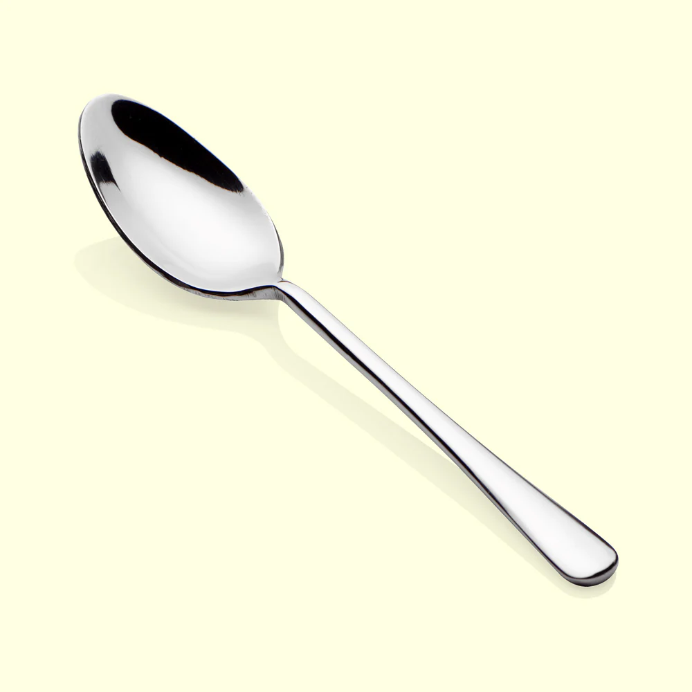
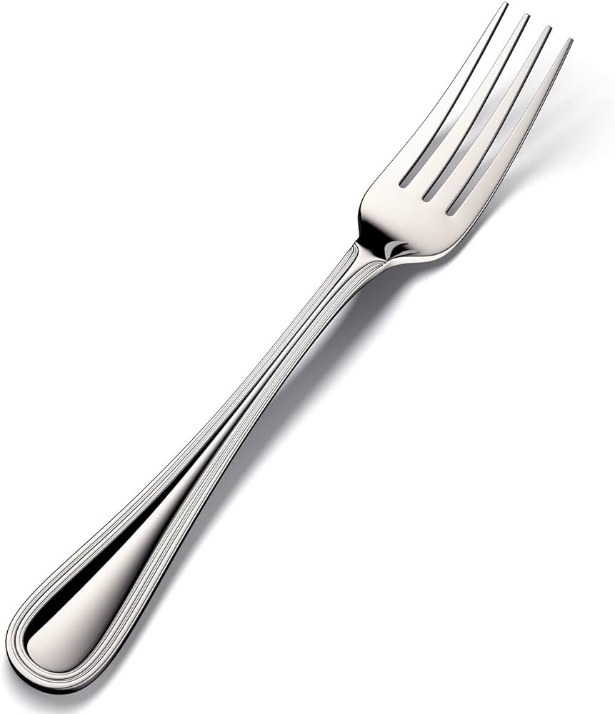
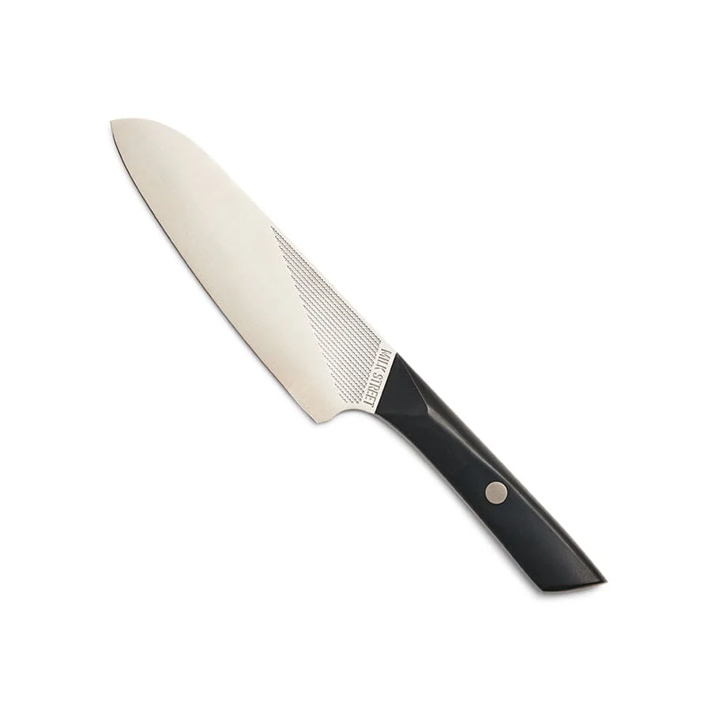
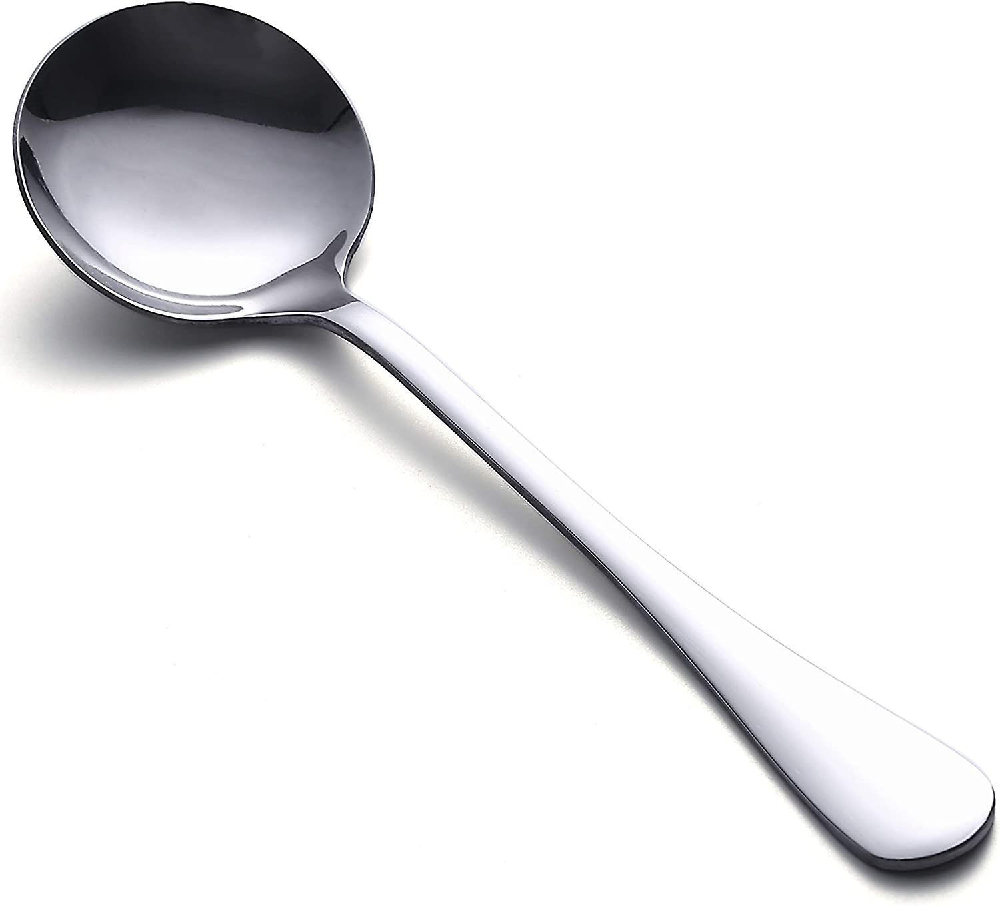
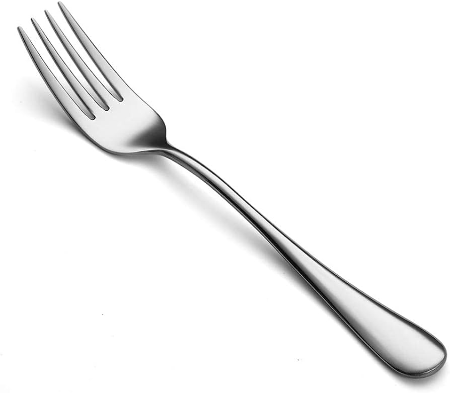
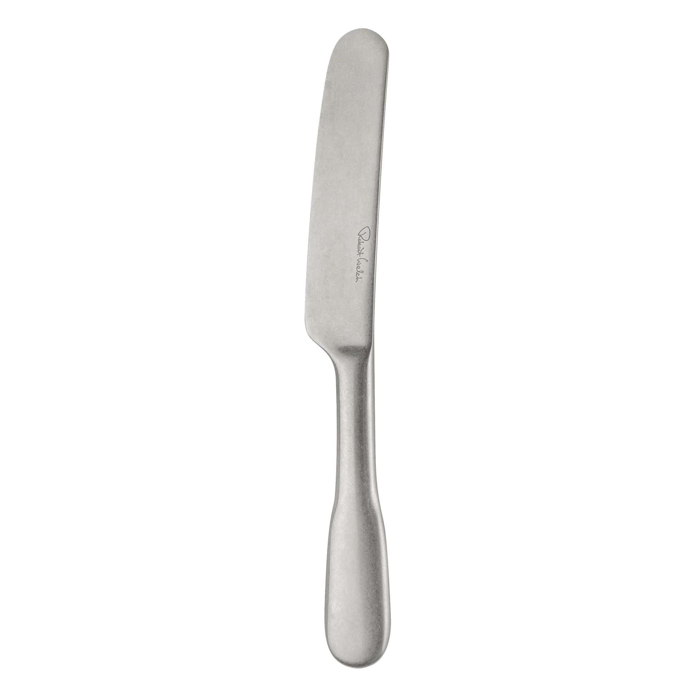
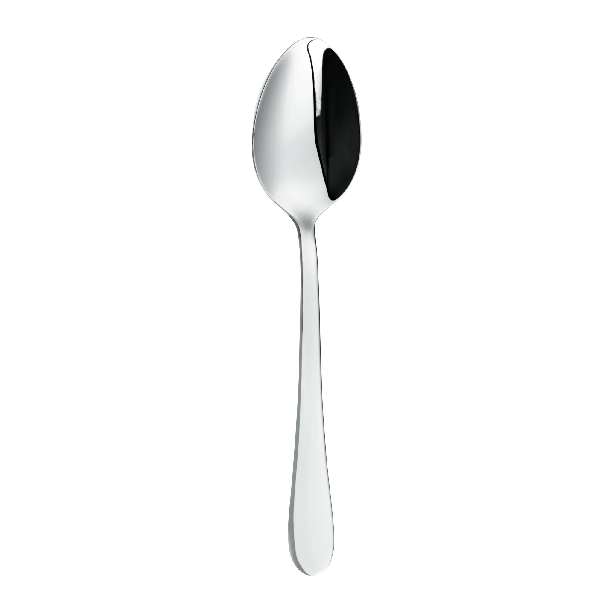

Spoons have been used since ancient times. The largest manufacturer is Cambridge Silversmiths Ltd, producing millions annually, mostly in stainless steel.

Forks were introduced in the 11th century and became popular in Europe during the Renaissance. Today, WMF Group leads in production.

Knives were one of the earliest tools used by humans. Today, Cutco is the largest knife manufacturer in the US.

Soup spoons have a deeper bowl and are mostly produced by Oneida Ltd, a leader in flatware manufacturing.

Salad forks are typically smaller and shorter. Gorham Silver is a well-known company for producing these utensils.

Butter knives are made with a rounded tip. Reed & Barton is a famous company producing these in various materials.

Teaspoons are small and typically used for stirring tea or coffee. They are often made from stainless steel or silver-plated metals.

Dessert forks are smaller than standard forks, with Cambridge Silversmiths being a major manufacturer.